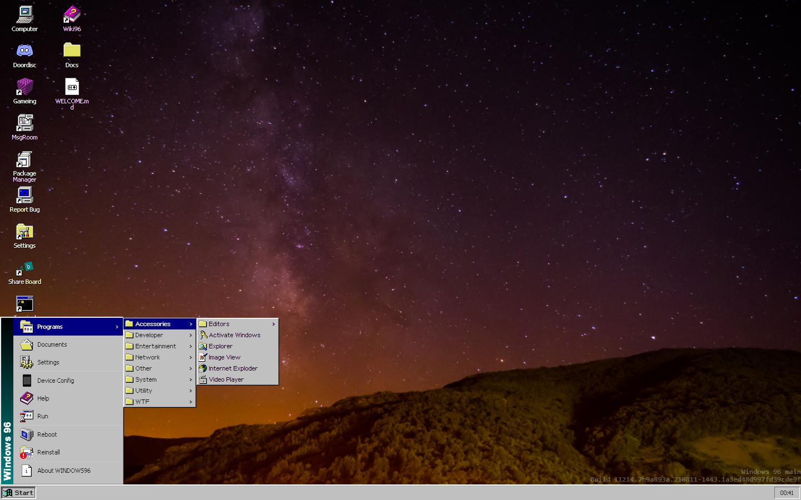

Muita gente não sabe, mas, entre o Windows 95 e o 98, haveria uma outra versão do sistema operacional da Microsoft – o Windows 96. O projeto foi engavetado pela big tech. Ainda assim, quem quiser imaginar como seria a experiência na plataforma pode conferir o Windows96.net, em que desenvolvedores emulam o SO e garantem recursos dignos de uma viagem no tempo.
Logo de cara, é possível notar a presença de ícones clássicos na área de trabalho, muitos deles funcionais. Deseja visitar o Terminal? É só o abrir. Quer mudar o visual de sua tela e selecionar um novo papel de parede? Fique à vontade. Não deixe, também, de explorar o menu Iniciar.
Aliás, um gerenciador permite a instalação de games com um único clique, incluindo Doom e a demo de Half-Life. É preciso lembrar que todas as ações ocorrem no navegador e que nada, de fato, fica instalado em sua máquina.

Site emula experiência de clássico não lançado.
Clássico até nos bugs!
No melhor estilo Inception, pode-se, no Windows96.net, emular o Windows 95 dentro do emulador do Windows 96 – um sistema real dentro de um sistema fake executado em um navegador. Wes Fenlon, do site PC Gamer, explica que tentou abrir o Internet Explorer na solução e que o movimento "quebrou" a página. "Se isso não acontecesse, não seria um Windows clássico", brinca.
Por fim, há opções para torná-lo mais parecido com o Windows XP ou com o Windows Vista ou 7 no estilo Aero. Ou seja, um prato cheio para saudosistas de plantão – que, se preferirem, poderão até entrar em um canal do Discord da comunidade, relatar bugs e contribuir com o projeto no GitLab.
Bateu a curiosidade? Basta clicar aqui para conferir o Windows 96